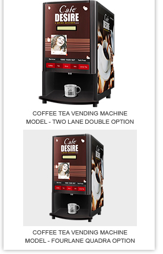

MJR
ENTERPRISES
Vending Service Our support is only one call away. Our call centers provide high level customer service. Whenever you need any technical service, our call centre takes the call and dispatch the inquiry to the relevant engineer using web enabled PDA technology. The result is close monitoring of service level, keeping track of incoming calls and the level of response. Regular and continuous training is provided to our local teams to ensure a quick and efficient support to Café Desire vending machines. As part of our service we will bring the vending machines to your premises and take care of the installation. We also provide a training to operate the vending machines. |
|  |
|